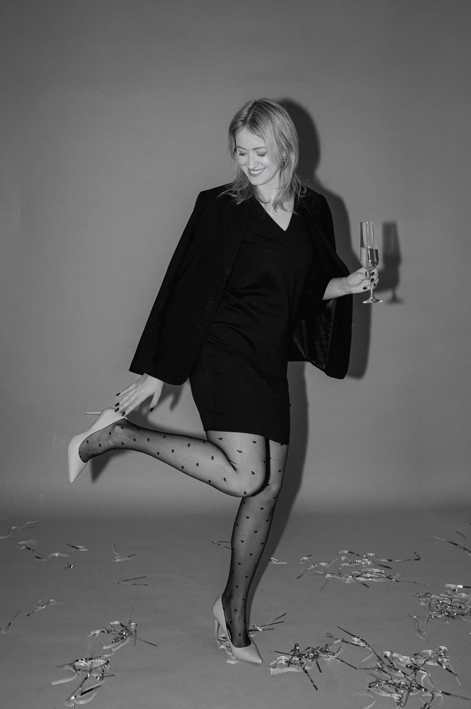
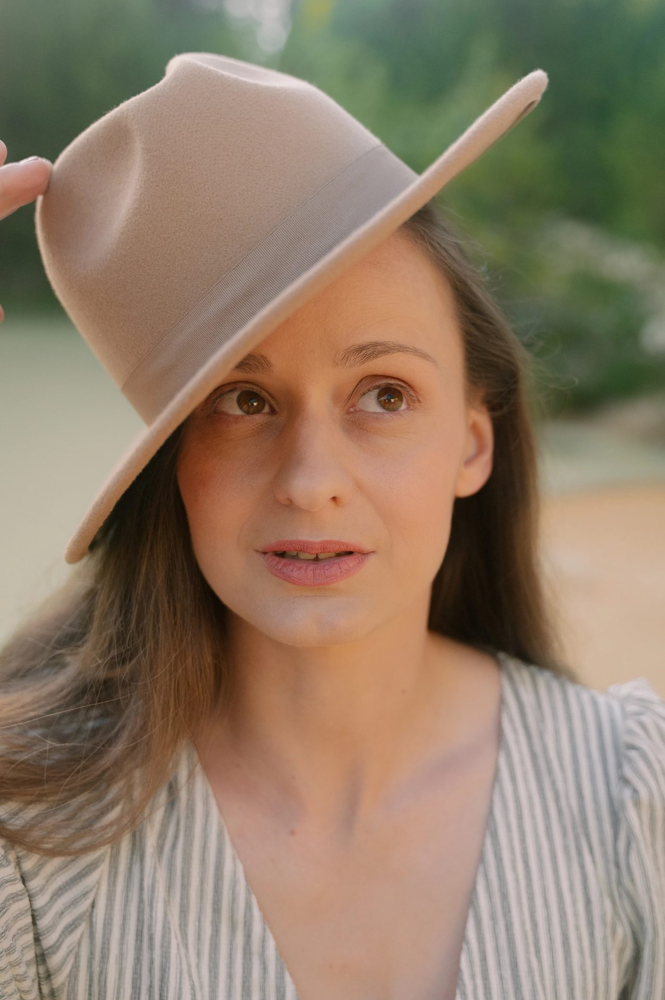
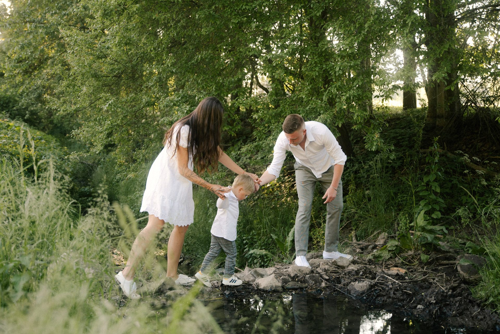
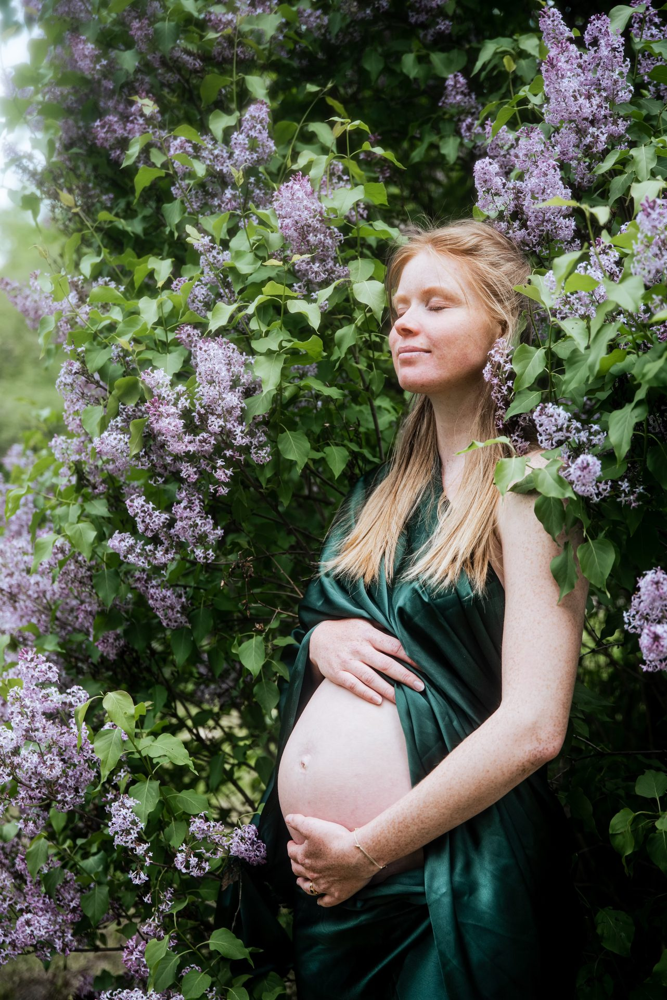

co si vzít na sebe na focení: 7 tipů, aby ti to slušelo
Oblečení hraje na fotkách obrovskou roli. Proto jsem sepsala pár rad a základních pravidel, kterých je fajn se při výběru outfitu držet. Platí pro portrétní, párové i rodinné focení.
1. nech doma neonové barvy, loga a nápisy
Tohle je základ všeho, a pokud si máš zapamatovat jediné pravidlo, je to tohle. Na fotkách má jít hlavně o tebe a o chvíli, kterou se snažíme zachytit, takže nedopusť, aby tě oblečení překřikovalo. Výrazné a křiklavé barvy se navíc odrážejí do obličeje, a to fakt nechceme. A hlavně se vyhni velkým logům a nápisům. Malé nenápadné logo nevadí, ale když to jde úplně bez, je to určitě lepší.


2. zemité barvy tě nikdy nezklamou
Když vůbec nevíš, co si vzít na sebe a jak zkombinovat barvy, sáhni po zemitých tónech. S nimi nikdy nešlápneš vedle. Fotím hlavně v přírodě a tam se hodí obzvlášť. Mám ráda i pastelové barvy, na fotkách vypadají skvěle.
Pro inspiraci přikládám paletu barev ke každému ročnímu období. Ber ji opravdu jen jako inspiraci, většina barev se hodí skoro vždycky. Mysli ale na místo, kde budeme fotit, aby se tvoje oblečení nebilo s pozadím.
jarní focení
paleta barev
sofiezborilova.cz
letní focení
paleta barev
sofiezborilova.cz
podzimní focení
paleta barev
sofiezborilova.cz
zimní focení
paleta barev
sofiezborilova.cz
3. materiály a textury
Neboj se kombinovat. Na fotkách vypadají skvěle různé textury, třeba kůže, koženka, džínovina, len nebo pletenina. Outfit tak jednoduše ozvláštníš.

4. nech své oblečení rozevlát
Co se nejvíc hodí pro uvolněné fotky? Uvolněné oblečení, ve kterém se budeš cítit dobře. Super jsou volné šaty, které doplníš třeba páskem. Pro pány lehká košile přehozená přes tričko. Pohodlné oblečení je mnohem lepší než se mačkat v něčem upnutém, co tě všude stahuje. A navíc krásně zachytí pohyb.
5. neboj se doplňků ani „nevšedního“ outfitu
Focení je skvělá příležitost obléct se podle svých představ a pořádně se vystrojit. Vezmi si to, v čem se cítíš dobře a přirozeně. Nezapomeň ani na doplňky, pokud je běžně nosíš: šálu, klobouk, sluneční brýle, čepici nebo zajímavé sponky do vlasů. Naopak se vyhni výrazným sportovním hodinkám a gumičkám zapomenutým na ruce (můj věčný problém vždy a všude).


6. sladit, nebo nesladit?
Nemyslím kafe, to rozhodně nesladit, žejo? Ale možná řešíš, jak vymyslet oblečení, když se fotíte ve víc lidech. Rozhodně nemusíte mít stejně barevná trička a vypadat jak přes kopírák. Sladila bych se ale aspoň do jednoho stylu, aby nepřišla slečna v elegantních šatech a její partner ve sportovním. Buď jedno, nebo druhé.
Stejně tak u barev: zkuste se držet aspoň zemité palety. Černou, bílou, šedou, béžovou, tlumenou zelenou nebo hnědou doma určitě najdete. Dětem se neboj dopřát i výraznější barvy, jen ne křiklavé.

7. vezmi si na focení svou srdcovku
Máš oblečení nebo doplněk, který vystihuje tvou osobnost a je pro tebe fakt důležitý? Tak ho nezapomeň doma. Mám ráda, když se do fotek dostanou i věci, na kterých ti opravdu záleží. Míša si třeba vzala košili s kočkama, kterou miluje a všichni si ji s ní spojují. Kačí zase přinesla šátek z cest po Indii. Pojďme do fotky vložit kousek tvého příběhu.


vyber si fotografa, který ti s tím pomůže
Než skončím, ráda bych ti dala ještě jeden tip navíc. Musím ho zmínit, protože je hodně důležitý, možná vůbec nejdůležitější z celého článku.
Dobrý fotograf tě s oblečením nenechá v tom samotné a pomůže ti ho vybrat. U mě to funguje takhle: před focením ti pošlu základní pravidla, tedy v podstatě tenhle článek.
Když si pořád nevíš rady, třeba u rodinného focení, připravím vám moodboard s inspirací. Z každé fotky si vezmete něco málo a zkombinujete to s tím, co máte doma, takže nemusíte nic kupovat. Nebo mi oblečení doma vyfotíš a kombinaci vymyslíme spolu.
U párového nebo portrétního focení často vymýšlíme i celý koncept. Fotky můžeme lehce naladit do retro stylu, do kovbojského stylu nebo do čehokoli, co je ti blízké. Vyber si proto fotografa, který ví, co dělá, a se vším ti pomůže.
na závěr
Tohle bylo mých 7 tipů a jeden bonusový, kterých se můžeš držet. Chtěla bych ale zdůraznit, že není až tak důležité, kde fotíme a jak vypadáš, ale hlavně jak se cítíš. Soustřeď se hlavně na to, ať tě focení baví. Jak budou fotky vypadat, nech na mně.
Když si s výběrem nebudeš vědět rady, napiš mi. Moc ráda ti s oblečením pomůžu. A jestli chceš vidět, jak to vypadá v praxi, sleduj mě na Instagramu @sofiezbo.
Znáš někoho, komu by tenhle článek pomohl? Klidně mu ho pošli.

mohlo by tě zajímat
Další články, které se ti můžou hodit.